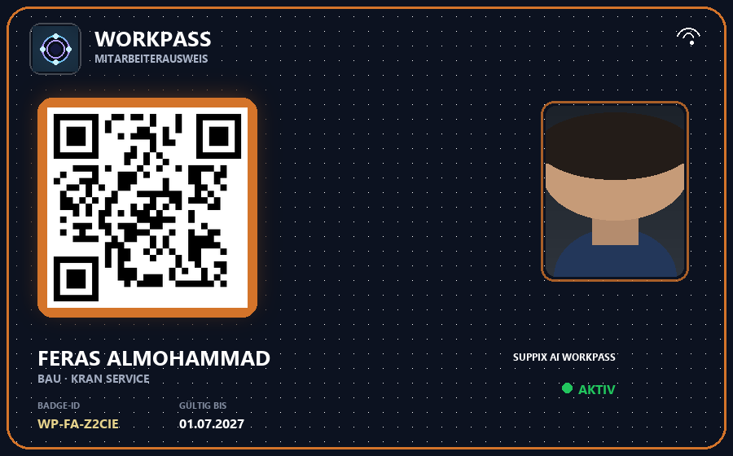

Perfekt für die Baustelle
Nicht jeder Bauarbeiter hat ein Smartphone. Deshalb bekommt jeder Mitarbeiter eine physische WorkPass-Karte – robust und sofort einsatzbereit. Wer ein Handy hat, nutzt zusätzlich die App mit digitalem Pass, Tagesplan und direkter Kommunikation zur Firma. Die digitale Zeiterfassung läuft über dieselbe Karte oder App – vertieft für den Einsatz: Zeiterfassung Baustelle, NFC-Zeiterfassung.

Funktionen für Bauunternehmen
- Physische Ausweiskarten mit Firmenlogo und Mitarbeiterdaten
- Ein- und Ausstempeln per Terminal, QR, NFC oder GPS-Geofence
- Besucherverwaltung für Subunternehmer und Lieferanten
- Monats-Einsatzplan mit Versand per E-Mail und Push
- Chat, Anrufe und Video-Meetings in der Mitarbeiter-App
- Verspätungs-Alarm und Live-Anwesenheit auf der Baustelle
- Multi-Firma-fähig für Generalunternehmer
Empfohlenes Paket
Für die meisten Bauunternehmen empfehlen wir Professional (999 €/Monat): Einsatzplan, Team-Kommunikation und Alarme inklusive. Kleine Teams starten mit Starter (149 €/Monat).
WorkPass live erleben
In der Demo zeigen wir Identität → Zutritt → Plan → Chat → Alarm – genau den Alltag Ihrer Baustelle.
Demo-Video Demo buchen